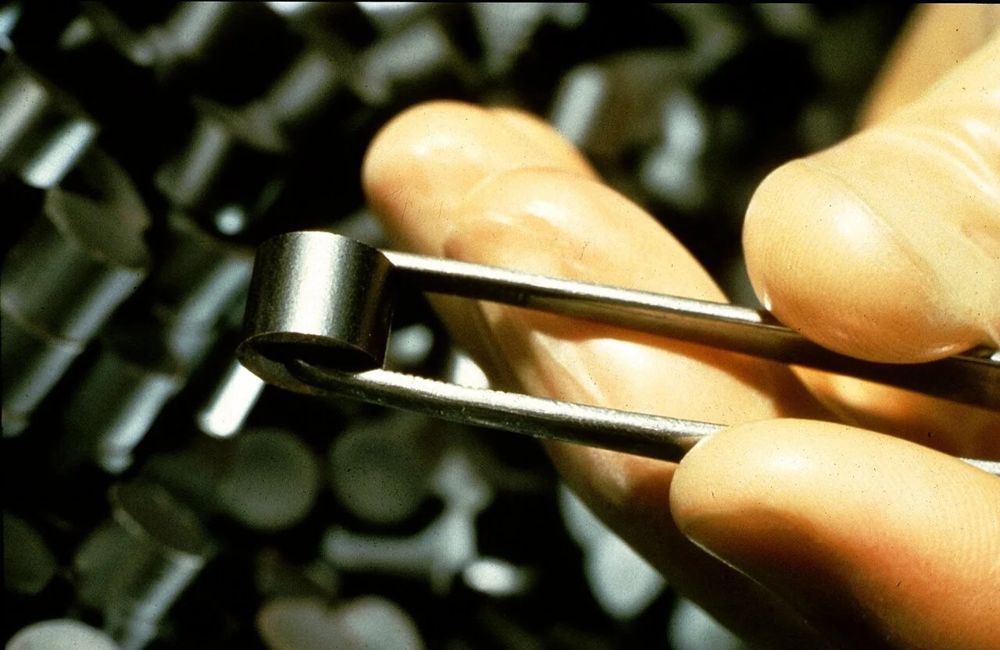
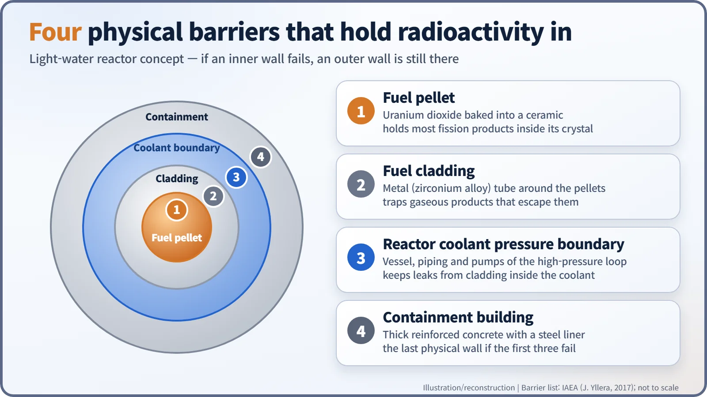
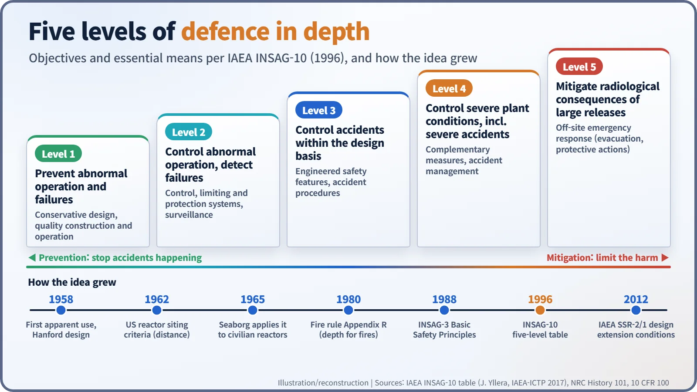

Nuclear History · 241
If One Layer Fails, the Next Holds — How "Defense in Depth" Moved from the Trenches to Nuclear Safety
From Hanford's "lines of defense" and Seaborg's 1965 letter to the IAEA's five levels of 1996, each accident taught engineers to add layers that fail for different reasons.
"Defense in depth" began as a First World War idea: several lines of trenches instead of one. Nuclear engineers borrowed it, first at wartime Hanford, then for civilian reactors from the mid-1960s, and the IAEA later organised it into four physical barriers and five levels of protection. Each major accident since has pushed the concept further.
A word with a military CV
Words have CVs too. The one we follow here started its career in the army. According to Thomas Wellock, historian of the US Nuclear Regulatory Commission (NRC), the strategy behind it was devised by the French and German armies of the First World War: instead of a single trench line, dig several, deep and interconnected, so that an enemy who breaks through the first is stopped at the next. Nuclear engineers borrowed the name. Today the NRC describes defense in depth as an approach to designing and operating nuclear facilities built on multiple independent and redundant layers, so that "no single layer, no matter how robust, is exclusively relied upon." [1] [2]
The Manhattan Project's "lines of defense"
The idea's first nuclear job was at Hanford, Washington, during the Second World War. The people starting up the plutonium production reactors there worried about a "catastrophe" in which radioactivity might be released with "explosive violence." So they set up several "lines of defense": trained operators, sealed fuel rods, shielding, backup cooling and backup power, and finally an emergency shutdown device. Fittingly, that last device took its nickname from another military term: the "last ditch" safety device. [2]
After the war, safety committees of the US Atomic Energy Commission (AEC) sorted these defences into three groups: features that made a reactor inherently safe; "static," or physical, barriers such as containment buildings; and active systems to shut down and cool the reactor if something went wrong. Experts disagreed about which group deserved the most weight.
From distance to layers
The phrase "defense in depth" itself, Wellock writes, appears to have been used first in 1958, to describe safety design in the plutonium extraction processes at Hanford. In 1965, AEC Chairman Glenn T. Seaborg (1912–1999) applied it to civilian power reactors in a letter to Congress, describing "multiple safeguards against the occurrence of a serious accident, and for containment of fission product release." The term stuck. [2]
The times were pushing the same way. Early reactors relied heavily on distance. The US reactor site criteria, published on 12 April 1962 as 10 CFR Part 100, required an "exclusion area" around a reactor and a "low population zone" beyond it. But as plants grew larger and moved closer to the cities that needed their electricity, distance alone was no longer enough. The centre of gravity shifted from keeping reactors far away to wrapping them in layer after layer. [4]
Four walls and five levels
Defense in depth works on two levels. The first is the walls you could, in principle, touch. In a light-water reactor, radioactive material is held in by four physical barriers: the ceramic fuel pellet, the metal fuel cladding, the reactor coolant pressure boundary (vessel, piping and pumps), and the containment building. If an inner wall fails, an outer one is still there. [3]


The second is a plan laid out in the order an accident would unfold. In 1988, two years after Chernobyl, the International Nuclear Safety Advisory Group (INSAG) of the International Atomic Energy Agency (IAEA) published Basic Safety Principles for Nuclear Power Plants (INSAG-3). It defined defence in depth as a concept implemented "to compensate for potential human and mechanical failures," centred on several levels of protection including successive barriers. The IAEA notes that the term was better defined after Chernobyl. In 1996, INSAG-10, Defence in Depth in Nuclear Safety, set out a table of five levels, each with an objective and its essential means. [3]
| Level | Objective | Essential means |
|---|---|---|
| 1 | Prevention of abnormal operation and failures | Conservative design and high quality in construction and operation |
| 2 | Control of abnormal operation and detection of failures | Control, limiting and protection systems and other surveillance features |
| 3 | Control of accidents within the design basis | Engineered safety features (such as emergency core cooling) and accident procedures |
| 4 | Control of severe plant conditions, including prevention of accident progression and mitigation of the consequences of severe accidents | Complementary measures and accident management |
| 5 | Mitigation of radiological consequences of significant releases of radioactive materials | Off-site emergency response (for example evacuation) |

Accidents kept moving the boundary
These levels were not handed down complete; they widened each time something went wrong. After the 1975 fire at Browns Ferry, the NRC's fire protection rule, Appendix R to 10 CFR 50, issued on 19 November 1980, applied defense in depth to fire itself: prevent fires; detect, control and extinguish those that occur; and make sure the plant can still be shut down safely. The 1979 accident at Three Mile Island showed that operators' judgement and emergency response are lines of defence too. After Chernobyl, severe accidents beyond the design basis entered the plan. [6]
In 2011, at Fukushima Daiichi, a single cause, the tsunami, knocked out power and cooling, several layers at once. That is why the IAEA's 2012 design safety requirements (SSR-2/1) treat conditions beyond the original design envelope separately as "design extension conditions," and ask that the equipment for them be independent, as far as practicable, of the equipment used for more frequent accidents. [3]
People often explain the idea with "Swiss cheese," a model of accident causation from the psychologist James Reason: stack several slices, and something gets through only when the holes happen to line up. It is a helpful aside rather than the nuclear definition, and its real lesson is not the number of slices but making sure the holes appear for different reasons. Ten layers that fail together for one reason protect less than three that can only fail for different ones.
The concept is still being revised. In a 2012 report (NUREG-2150), the NRC itself observed that "no clear definition or criteria exist on how to define adequate defense-in-depth protections." The humility at its core is the same one the trench diggers had: no single wall is ever perfect. [5]